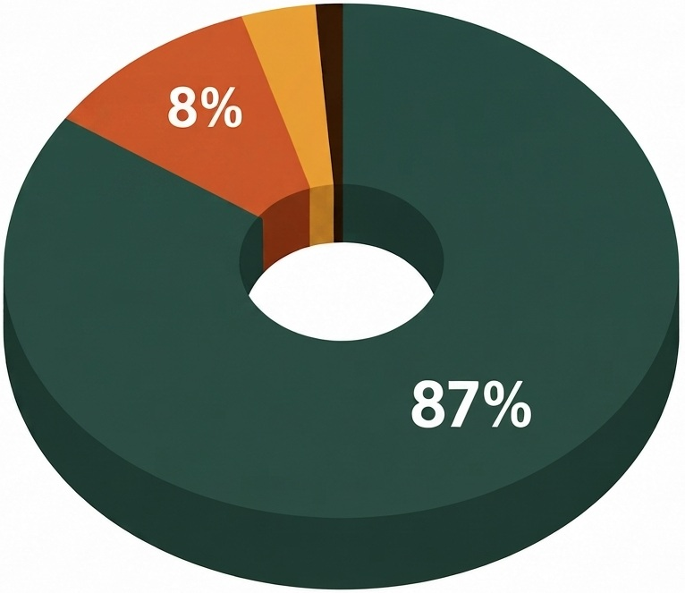

La transparence financière
Chez Zazany Madagascar, chaque euro compte. Veillons à une gestion rigoureuse et transparente des fonds qui nous sont confiés, afin de garantir un soutien efficace et durable aux enfants et aux familles. Parmi les valeurs de notre association, « la transparence » en fait partie.
Cela nous semble donc important que vous sachiez comment sont utilisés vos dons dans le cadre de la solidarité et de partage.
Pour l’instant, nous n’avons pas recours à un commissaire aux comptes étant donné que nous n’avons pas de ressources financières dépassant les 153 000€ par an, un des critères qui oblige une association à avoir un commissaire aux comptes.
En effet, Zazany Madagascar est une jeune association qui a plusieurs années d’activités et malgré plusieurs projets déjà accomplis, nous n’avons pas encore bénéficié de subventions publiques. Néanmoins, la désignation d’un commissaire aux comptes dans le cadre de la transparence est prévue dans nos statuts lorsque notre association aura remplie les critères demandées à cet effet. Retrouvez nos statuts
Comment ça fonctionne ?
Chaque euro a été utilisé pour soutenir directement nos actions sur le terrain. Voici comment se répartissent les dépenses :

87%
Soutien aux actions sur le terrain
8%
Fonctionnement et autres charges
4%
Développement et autres ressources
1%
Information et communication
Nos rapports d’activité
Vous pouvez consulter et télécharger nos documents officiels :
Pour l’instant, nous n’avons pas recours à un commissaire aux comptes étant donné que nous n’avons pas de ressources financières dépassant les 153 000€ par an, un des critères qui oblige une association à avoir un commissaire aux comptes.
En effet, Zazany Madagascar est une jeune association qui a plusieurs années d’activités et malgré plusieurs projets déjà accomplis, nous n’avons pas encore bénéficié de subventions publiques. Néanmoins, la désignation d’un commissaire aux comptes dans le cadre de la transparence est prévue dans nos statuts lorsque notre association aura remplie les critères demandés à cet effet.
Nous avons plus que jamais besoin de vous pour améliorer la vie des enfants démunis de Madagascar
Vous ne pouvez peut-être pas faire de don, mais la cause des enfants démunis vous tient à cœur. Rejoignez-nous pour aider à développer l’association à Paris.

Faire un don, c’est soutenir et protéger l’enfance en détresse. Vos contributions sont des ressources précieuses pour mener à bien nos actions humanitaires sur le terrain.
Vous avez des questions ?
N'hésitez pas à nous contacter, nous serons ravis de vous répondre.